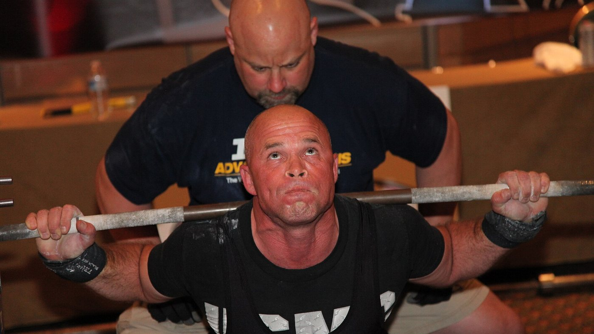
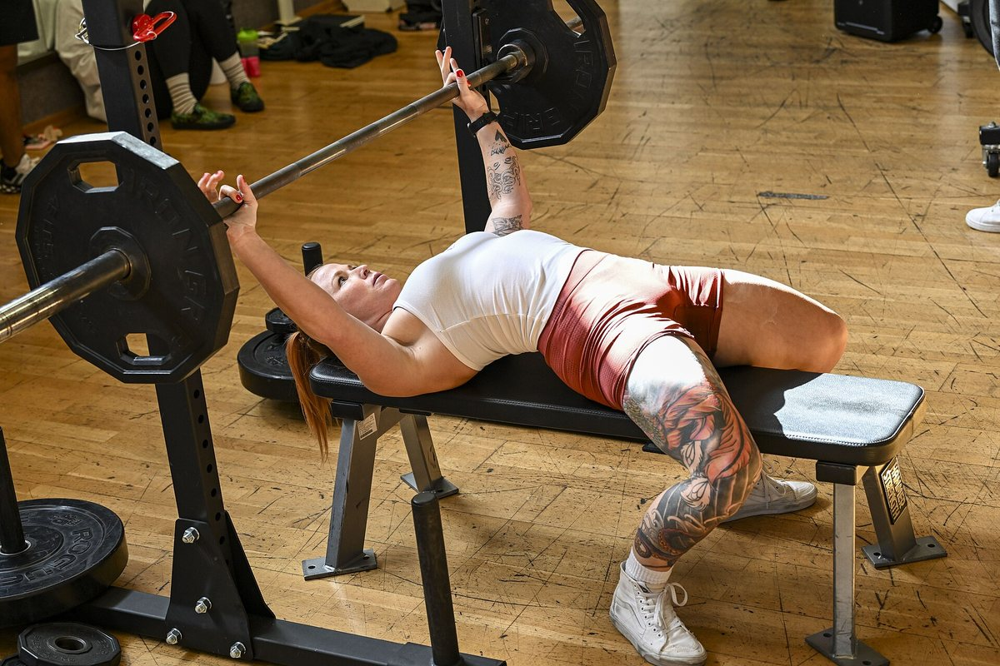
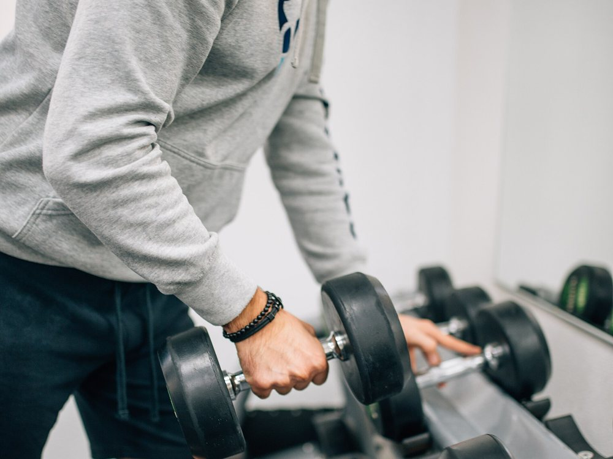

Сколько повторений реально нужно для роста мышц
За последние недели четыре разные карусели сказали одно и то же: диапазон 8-12 повторений не волшебный, мышца растёт и на 6 повторениях, и на 30. В этом они правы, и за этим стоит гора исследований. Проблема во всём остальном, что они нагромоздили вокруг — про подходы, отдых и объём, — где минимум три утверждения не выдерживают проверки. Разберём их по порядку.
Коротко
- Диапазон повторений значит намного меньше, чем принято думать. Новый position stand Американской коллегии спортивной медицины (ACSM), опубликованный в марте 2026 года на основе 137 систематических обзоров и более 30 000 участников, не нашёл различий в гипертрофии при нагрузках от 30% до 100% разового максимума. Мышца не умеет считать повторения. Она считывает усилие.
- Для максимальной силы вес важен, и очень. В исследовании, которое сделало эту тему популярной, 25-35 повторений в подходе дали столько же мышечной массы, сколько 8-12, но максимум в приседе вырос на 19,6% с большими весами против 8,8% с малыми.
- «После третьего подхода покупаешь только усталость» — неправда. ACSM помещает убывающую отдачу для гипертрофии в район 18-20 подходов в неделю на мышцу, а не трёх. Мета-регрессия 2026 года по 67 исследованиям даёт 100% вероятность того, что больше объёма означает больше роста.
- До настоящего отказа доходить не нужно. Position stand сформулирован прямо: доведение подходов до мгновенного мышечного отказа не увеличивает прирост силы, гипертрофии и мощности. Достаточно 2-3 повторений в запасе.
- Про отдых посты упростили. Одно исследование на тренированных атлетах говорит в пользу трёх минут против одной, но синтез ACSM не находит системных различий в силе между отдыхом меньше и больше минуты. «Минимум 90 секунд» не взят ни из одного исследования — это число придумали в подписи.

Откуда взялось правило 8-12
Тридцать лет учебники учили «континууму повторений»: большие веса и мало повторений — для силы, средние веса и 8-12 повторений — для объёма, малые веса и много повторений — для мышечной выносливости. Теория была стройной, но построенной скорее на логике, чем на измеренном росте.
Проблемы начались, когда толщину мышц стали реально измерять на УЗИ. Середина континуума не проявилась.
В 2015 году группа под руководством Брэда Шонфельда взяла 18 мужчин с тренировочным опытом и разделила их на две группы: одна делала 8-12 повторений в подходе, другая 25-35, на семи упражнениях, три раза в неделю, восемь недель. Все подходы до отказа.
Через восемь недель прирост толщины мышц оказался практически одинаковым: квадрицепс +9,3% против +9,5%, разгибатели локтя +6,0% против +5,2%, сгибатели локтя +5,3% против +8,6%, без статистически значимых различий. С силой история другая: максимум в приседе вырос на 19,6% в группе с большими весами и на 8,8% в группе с малыми.
Более поздний мета-анализ 21 исследования подтвердил картину: схожая гипертрофия по всему спектру нагрузок и заметно лучшая максимальная сила с большими весами. А в марте 2026 года position stand ACSM — синтез 137 систематических обзоров — закрыл вопрос: гипертрофия не зависела от нагрузок в диапазоне от 30% до 100% разового максимума.
Так что да: мышца не умеет считать. Но она различает усилие, и именно эту часть карусели передают плохо.
Усилие важно. Отказ — нет
Это самое полезное различие во всей теме и хуже всего переносимое в соцсети.
Что усилие должно быть высоким — вне сомнений: возьмите лёгкий вес, остановитесь далеко от предела, и стимула не будет. Мета-регрессия 2024 года именно по этому вопросу показала, что гипертрофия растёт по мере того, как подходы заканчиваются ближе к отказу, тогда как прирост силы остаётся схожим в широком диапазоне повторений в запасе.
Но «близко к отказу» — это не «до отказа». Position stand ACSM говорит прямо: доведение подходов до мгновенного мышечного отказа не увеличивает прирост силы, гипертрофии или мощности, а некоторым — людям старшего возраста, всем, у кого техника ещё шаткая — добавляет риска. Достаточный стимул даёт работа рядом с отказом, с ориентиром 2-3 повторения в запасе.
RIR (repetitions in reserve, повторения в запасе) — это просто сколько повторений вы могли бы сделать ещё до остановки. RIR 2 значит, что вы поставили штангу, имея два в запасе.

Это самый большой практический разрыв между версией из соцсетей и литературой: карусель говорит «жми до предела», исследования говорят «жми до двух повторений от предела, а остальное сохрани на следующий подход».
«После третьего подхода — только усталость»: самое слабое утверждение
Один из четырёх постов формулирует это так: один тяжёлый подход уже делает большую часть работы, второй почти удваивает её, а после третьего ты покупаешь в основном усталость.
Первая половина верна и хорошо известна: второй подход добавляет больше, чем подсказывает интуиция, и ACSM действительно рекомендует минимум два подхода на упражнение. Вторая половина противоречит всему, что у нас есть.
Position stand помещает убывающую отдачу для гипертрофии в район 18-20 подходов в неделю на мышечную группу — не трёх — и перечисляет объём среди немногих переменных, которые реально двигают рост, с положительным эффектом от 10 подходов на мышцу в неделю и выше. Мета-регрессия, опубликованная в 2026 году Пелландом с коллегами по 67 исследованиям и 2058 участникам, присваивает 100% апостериорную вероятность тому, что больший объём даёт и больше гипертрофии, и больше силы, с убывающей, но никогда не нулевой отдачей на всём изученном диапазоне. Более ранняя мета-регрессия оценила средний прирост в +0,37% мышечной массы на каждый дополнительный недельный подход.
Только не переворачивайте ошибку в другую сторону. Больший объём не бесплатен: отдача падает, усталость накапливается, а время в зале конечно. Но точка, где это перестаёт окупаться, лежит около 18-20 недельных подходов на мышцу, а не на трёх подходах за тренировку.
Отдых: здесь посты упростили сильнее всего
Утверждение под проверкой: долгий отдых лучше короткого и для массы, и для силы, а 90 секунд — это минимум.
Основание реально есть. В 2016 году исследование на 21 тренированном мужчине сравнило одну минуту против трёх минут отдыха на протяжении восьми недель при прочих равных: группа трёх минут получила больше силы в приседе и жиме и больше толщины передней поверхности бедра. Обзор того же года по шести исследованиям, однако, заключил, что работают оба подхода, с возможным преимуществом долгого отдыха у уже тренированных.
Синтез ACSM 2026, который смотрит на весь массив обзоров, ещё осторожнее: сила не зависела от отдыха меньше минуты против больше минуты, а данных по гипертрофии признали недостаточными для вывода.
А «минимум 90 секунд»? Его нет ни в одной из цитируемых работ. Это число выбрали в подписи.
Практический довод в пользу более долгого отдыха всё равно остаётся, и ему не нужны исследования гипертрофии: отдохнёте мало — следующий подход будет легче или короче, и качественной работы наберётся меньше. Отдых не волшебный ингредиент. Это то, что позволяет нормально выполнить следующий подход.
Что говорят исследования на самом деле
«От 6 до 30 повторений мышца растёт одинаково, если работать близко к отказу». — Schoenfeld 2015 про 25-35 против 8-12 повторений, мета-анализ 2017 года по 21 исследованию и position stand ACSM 2026 про нагрузки от 30% до 100% разового максимума.
«Сила живёт ниже 9 повторений». — Максимальная сила растёт больше с большими весами, и ACSM описывает зависимость «доза — ответ» от нагрузки, ссылаясь на веса от 80% разового максимума и выше.
«Один тяжёлый подход делает почти всё; после третьего покупаешь усталость». — Два подхода на упражнение — рекомендованный минимум, убывающая отдача для гипертрофии наступает около 18-20 недельных подходов на мышцу, а вероятность того, что больший объём даёт больший рост, в мета-регрессии 2026 года оценена в 100%.
«Долгий отдых лучше короткого для массы и силы; 90 секунд — минимум». — Одно РКИ на тренированных говорит в пользу трёх минут, обзор говорит, что работают оба варианта, а синтез ACSM не находит различий в силе между отдыхом меньше и больше минуты. У порога 90 секунд нет источника.
«10-20 тяжёлых подходов на мышцу в неделю — это диапазон роста». — Нижняя граница совпадает с ACSM (положительный эффект от 10 подходов и выше), но 20 — не потолок: это место, где прирост начинает стоить намного дороже.
«Главное — близко к отказу». — Гипертрофия действительно улучшается по мере приближения к отказу, но доходить до него не обязательно: 2-3 повторения в запасе дают тот же результат с меньшей усталостью и меньшим риском.
«NSCA обновила свои рекомендации по гипертрофии». — Мы не нашли первичного документа NSCA, который подтверждал бы цифры из поста. Проверяемое обновление 2026 года — это position stand ACSM, заменивший версию 2009 года.
Ссылка «PMID 7928218» как на исследование 2016 года про подходы по 4 повторения. — Этот идентификатор принадлежит работе 1994 года о гадолиниевых контрастных средствах в журнале Investigative Radiology. К силовым тренировкам она не имеет отношения. Это самое полезное напоминание во всей статье: PMID в подписи не является проверкой, пока его кто-нибудь не откроет.
Как это применять
Переведённое в программу, то, что действительно поддерживают исследования, проще, чем кажется.

- 1. Выбирайте диапазон повторений по упражнению, а не по догме. Тяжёлые базовые — 5-10 повторений (меньше технического риска, больше силы); изоляция — 10-20 (меньше нагрузки на суставы, проще безопасно дойти до своего предела). Это выбор по эффективности, а не по физиологии.
- 2. Ориентируйтесь на 2-3 повторения в запасе. Не на отказ. Если хочется выложиться до конца, сделайте это в последнем подходе упражнения — а не в каждом подходе тренировки.
- 3. Считайте объём на мышцу, а не на упражнение. Начните с 10 недельных подходов на мышечную группу, распределённых минимум на две тренировки, и поднимайтесь к 15-20 только если восстановление держится и прогресс идёт. Скорость ответа на добавленный объём сильно различается между людьми — об этом мы писали в материале про high и low responder.
- 4. Отдыхайте столько, чтобы хорошо выполнить следующий подход. На тяжёлой базе это обычно 2-3 минуты; на изоляции часто хватает 60-90 секунд. Если следующий подход просел на три повторения, вы отдохнули мало.
- 5. Прогрессируйте двойной прогрессией. Оставайтесь в своём диапазоне, добавляйте повторение, когда можете, а дойдя до верхней границы — добавьте вес и начните снизу. Это и есть двигатель, и здесь посты были правы.
- 6. Ведите записи. Без журнала весов, повторений и RIR вы не знаете, прогрессируете вы или повторяетесь. Почти все переоценивают свой недельный объём — подсчёт подходов по мышечным группам обычно оказывается неожиданностью.
Это диапазоны, наблюдавшиеся в исследованиях, а не индивидуальное назначение. Если у вас есть заболевание, текущая травма или вы следуете рекомендациям врача, обсудите изменения программы с врачом или квалифицированным специалистом.
Nurvan — пусть подходы за неделю считает приложение, а не память
Nurvan записывает вес, повторения и RIR каждого подхода и показывает, сколько рабочих подходов вы на самом деле набрали по каждой мышечной группе за неделю: меньше 10 или уже больше 20. Разминочные подходы предлагаются автоматически и не попадают в счёт рабочих, а прогресс по весам виден во времени, а не по памяти.
Частые вопросы
Сколько повторений делать для роста мышц?
Примерно от 5 до 30, если подход заканчивается близко к вашему пределу. Position stand ACSM 2026 не находит различий в гипертрофии при нагрузках от 30% до 100% разового максимума. Для практики: 5-10 повторений на базовых, 10-20 на изоляции.
Сколько подходов в неделю на одну мышцу нужно на самом деле?
Положительный эффект на гипертрофию появляется примерно от 10 недельных подходов на мышечную группу и выше, а отдача начинает падать около 18-20. Новички получают много даже с 4-6 хорошо выполненных подходов в неделю.
Нужно ли доходить до отказа в каждом подходе?
Нет. Position stand ACSM прямо говорит, что достижение мгновенного мышечного отказа не увеличивает прирост силы, гипертрофии или мощности. Остановки с 2-3 повторениями в запасе достаточно, и усталости она стоит гораздо меньше.
Сколько отдыхать между подходами?
Столько, чтобы хорошо выполнить следующий подход: обычно 2-3 минуты на тяжёлой базе и 60-90 секунд на изоляции. Доступные исследования не показывают универсального минимума, а у «минимума 90 секунд» из соцсетей нет источника.
Лёгкий вес на много повторений — это то же самое, что тяжёлый?
Для роста мышц да, если доходить близко до предела. Для максимальной силы нет: там большие веса выигрывают явно, а подходы по 25-35 повторений ещё и намного длиннее и неприятнее.
Читайте также
- Белок на сушке: сколько нужно на самом деле — нутриционный рычаг, который защищает мышцы в дефиците.
- Mr. Olympia 2026: результаты и выводы — что главная сцена этого спорта говорит про объём и восстановление.
- Low responder: насколько генетика определяет рост мышц — почему один и тот же объём даёт разным людям разные результаты.
Источники
- 1. Currier BS, D'Souza AC, Fiatarone Singh MA, Lowisz CV, Rawson ES, Schoenfeld BJ, Smith-Ryan AE, Steen JP, Thomas GA, Triplett NT, Washington TA, Werner TJ, Phillips SM, 2026. American College of Sports Medicine Position Stand. Resistance Training Prescription for Muscle Function, Hypertrophy, and Physical Performance in Healthy Adults: An Overview of Reviews. Medicine & Science in Sports & Exercise 58(4):851-872. PMID 41843416 — DOI
- 2. Pelland JC, Remmert JF, Robinson ZP, Hinson SR, Zourdos MC, 2026. The Resistance Training Dose Response: Meta-Regressions Exploring the Effects of Weekly Volume and Frequency on Muscle Hypertrophy and Strength Gains. Sports Medicine 56(2):481-505. PMID 41343037 — DOI
- 3. Robinson ZP, Pelland JC, Remmert JF, Refalo MC, Jukic I, Steele J, Zourdos MC, 2024. Exploring the Dose-Response Relationship Between Estimated Resistance Training Proximity to Failure, Strength Gain, and Muscle Hypertrophy: A Series of Meta-Regressions. Sports Medicine 54(9):2209-2231. PMID 38970765 — DOI
- 4. Schoenfeld BJ, Peterson MD, Ogborn D, Contreras B, Sonmez GT, 2015. Effects of Low- vs. High-Load Resistance Training on Muscle Strength and Hypertrophy in Well-Trained Men. Journal of Strength and Conditioning Research 29(10):2954-2963. PMID 25853914 — DOI
- 5. Schoenfeld BJ, Grgic J, Ogborn D, Krieger JW, 2017. Strength and Hypertrophy Adaptations Between Low- vs. High-Load Resistance Training: A Systematic Review and Meta-analysis. Journal of Strength and Conditioning Research 31(12):3508-3523. PMID 28834797 — DOI
- 6. Schoenfeld BJ, Ogborn D, Krieger JW, 2017. Dose-response relationship between weekly resistance training volume and increases in muscle mass: A systematic review and meta-analysis. Journal of Sports Sciences 35(11):1073-1082. PMID 27433992 — DOI
- 7. Schoenfeld BJ, Pope ZK, Benik FM, Hester GM, Sellers J, Nooner JL, Schnaiter JA, Bond-Williams KE, Carter AS, Ross CL, Just BL, Henselmans M, Krieger JW, 2016. Longer Interset Rest Periods Enhance Muscle Strength and Hypertrophy in Resistance-Trained Men. Journal of Strength and Conditioning Research 30(7):1805-1812. PMID 26605807 — DOI
- 8. Grgic J, Lazinica B, Mikulic P, Krieger JW, Schoenfeld BJ, 2017. The effects of short versus long inter-set rest intervals in resistance training on measures of muscle hypertrophy: A systematic review. European Journal of Sport Science 17(8):983-993. PMID 28641044 — DOI
- 9. Schoenfeld BJ, Grgic J, Van Every DW, Plotkin DL, 2021. Loading Recommendations for Muscle Strength, Hypertrophy, and Local Endurance: A Re-Examination of the Repetition Continuum. Sports (Basel) 9(2):32. PMID 33671664 — DOI
Научные источники получены из PubMed и проверены 5 октября 2026 года.
Отправная точка: карусели homebodyys, The Movement System, Christian Poulos и iwannaburnfat, опубликованные между 5 и 23 сентября 2026 года. Текст, структура, проверка фактов и графики этой статьи оригинальны.
Giammaria Loi — основатель Nurvan. Тренируется с отягощениями с 2012 года, работает персональным тренером и коучем с сертификацией FIPE с 2013 года и выступает в пауэрлифтинге на национальном уровне с 2018 года.
Примечание: информационный материал, он не заменяет консультацию врача или квалифицированного специалиста. Приведённые диапазоны взяты из исследований на конкретных группах людей и не являются персональной программой.